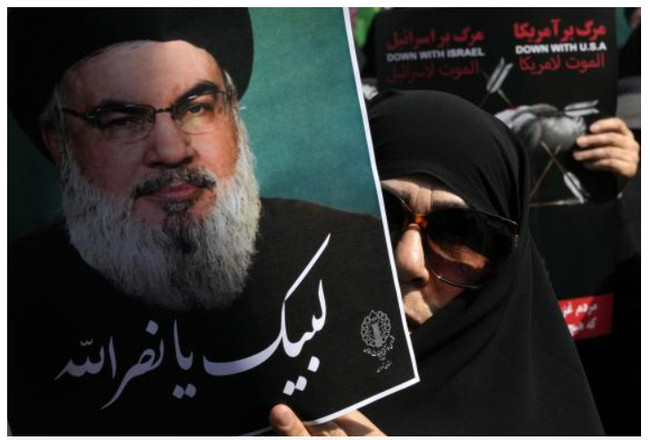

En una sorprendente noticia, Hezbolá ha confirmado que su líder, Hasán Nasralá, murió como resultado de un ataque israelí. Las fuentes indican que el ataque tuvo lugar durante un intenso enfrentamiento en la frontera sur del Líbano.
Según las primeras informaciones, Nasralá estaba supervisando operaciones militares cuando fue atacado directamente. La comunidad internacional ha reaccionado de inmediato, con preocupación por las posibles repercusiones en la región.
Puedes encontrar más información en la pagina dehorarios.